01តួស្រៈ · The vowel-lettersស្រៈពេញតួ
ស្រៈពេញតួមាន ឥ ឦ ឧ ឩ ឪ ឫ ឬ ឭ ឮ ឯ ឰ ឱ។
The full vowel-letters: ឥ ឦ ឧ ឩ ឪ ឫ ឬ ឭ ឮ ឯ ឰ ឱ.
Independent vowels — letters that stand alone · មេរៀនទី ១០ · Lesson 10 of ភាសាខ្មែរ កម្រិត ១
ស្រៈភាគច្រើនជាសញ្ញាពឹងពាក់ព្យញ្ជនៈ។ ស្រៈពេញតួមានតួខ្លួនឯង អាចរស់បានមិនត្រូវការព្យញ្ជនៈ។
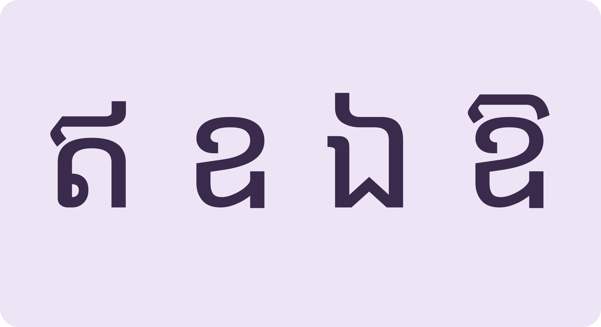
មានតួខ្លួនឯងThey stand on their own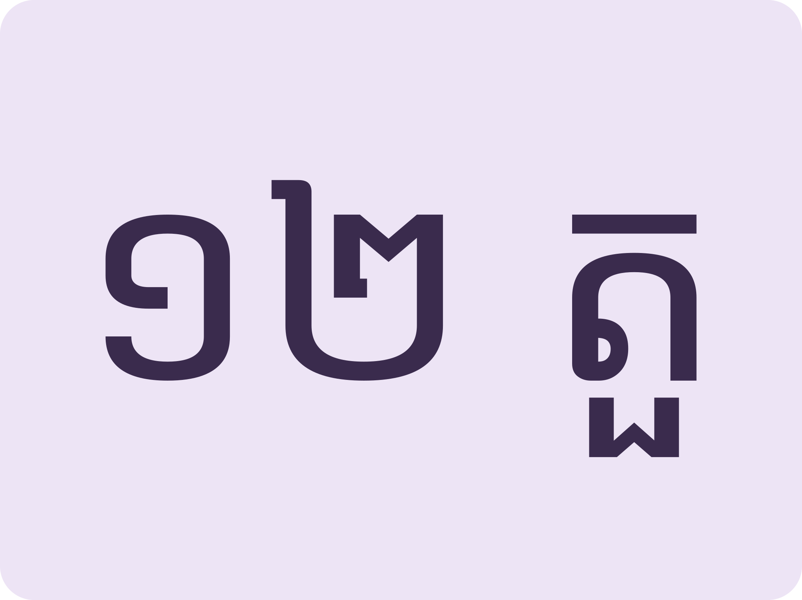
ស្រៈពេញតួ ១២Twelve full vowel-letters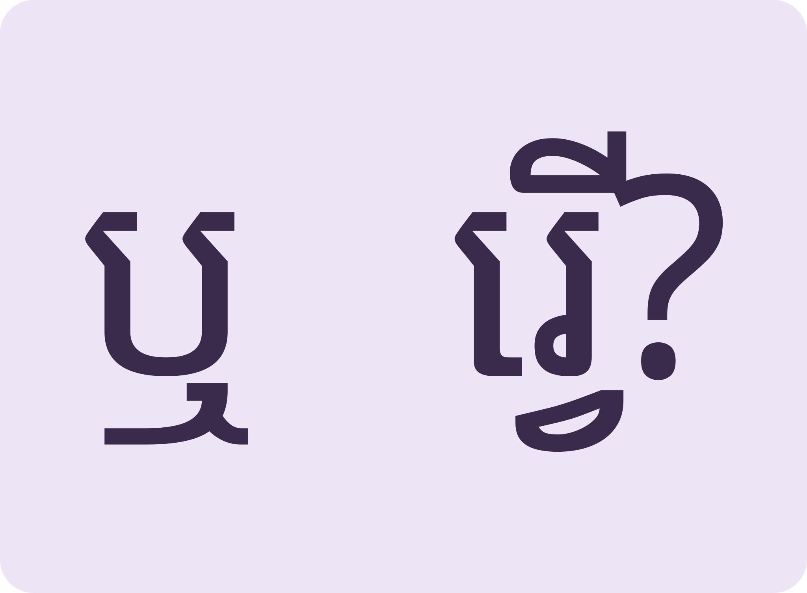
ខ្លះមានរូបជើងផងSome have subscript forms tooMeet the standalone vowel-letters, read words built on them, then handle paperwork at the commune.
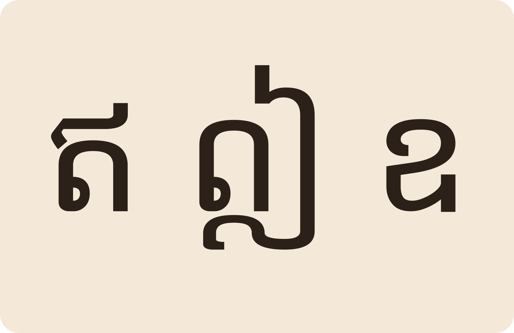
Space listen · ← → move · K show text
ស្រៈពេញតួមាន ឥ ឦ ឧ ឩ ឪ ឫ ឬ ឭ ឮ ឯ ឰ ឱ។
The full vowel-letters: ឥ ឦ ឧ ឩ ឪ ឫ ឬ ឭ ឮ ឯ ឰ ឱ.
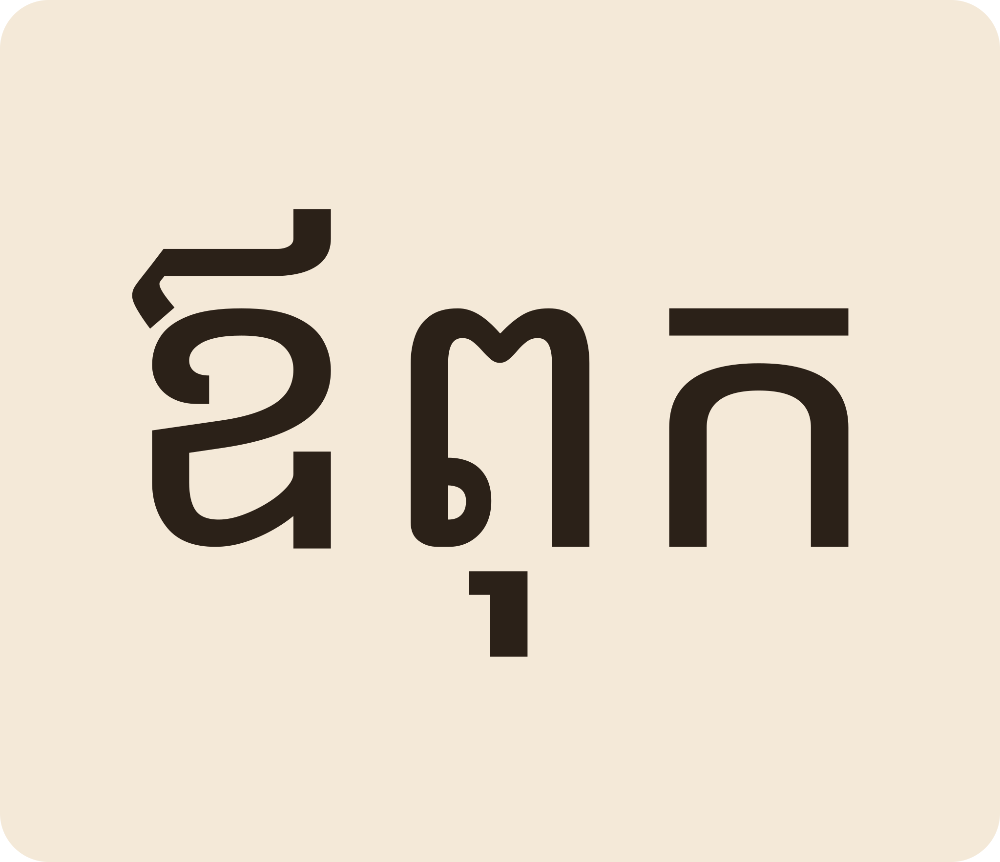
«ឪពុក» father។ កូនៗតែងតែរំលឹក និងតបស្នងសងគុណឪពុកម្តាយ។
ឪពុក “father”. Children remember and repay their parents' kindness.
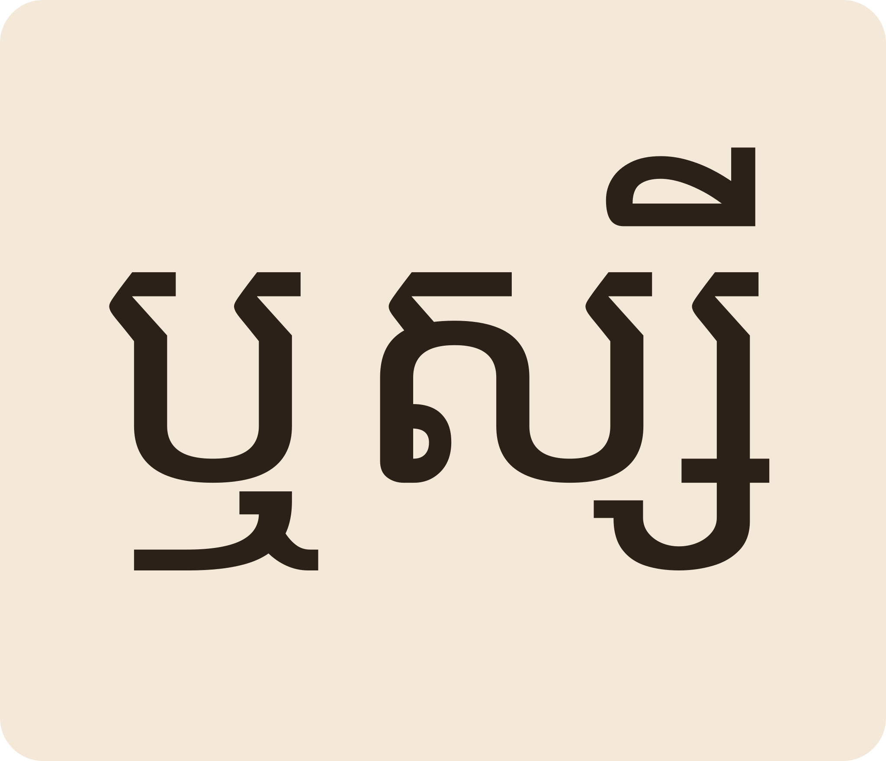
«ឬស្សី» bamboo។ ទីពុកខ្ញុំគាស់គុម្ពឬស្សីដើម្បីយកដី។
ឬស្សី “bamboo”. My grandfather digs up a bamboo clump for soil.
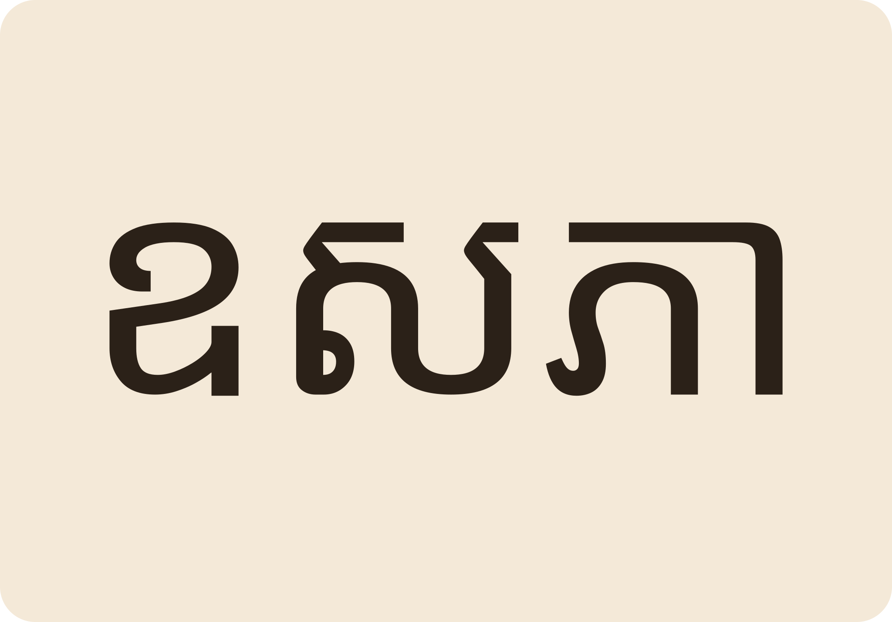
«ឧសភា» May។ ទិវាពលកម្មអន្តរជាតិនៅថ្ងៃទី០១ ខែឧសភា។
ឧសភា “May”. International Workers' Day is on 1 May.
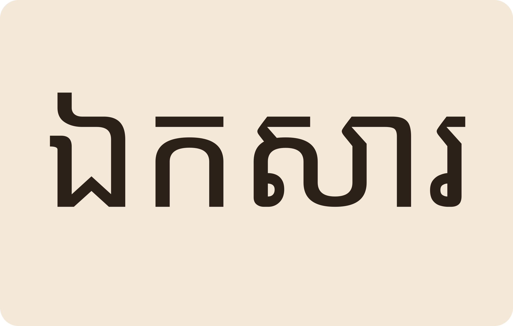
«ឯកសារ» document។ សិស្សល្អចូលបណ្ណាល័យដើម្បីស្រាវជ្រាវឯកសារ។
ឯកសារ “document”. Good students go to the library to research documents.
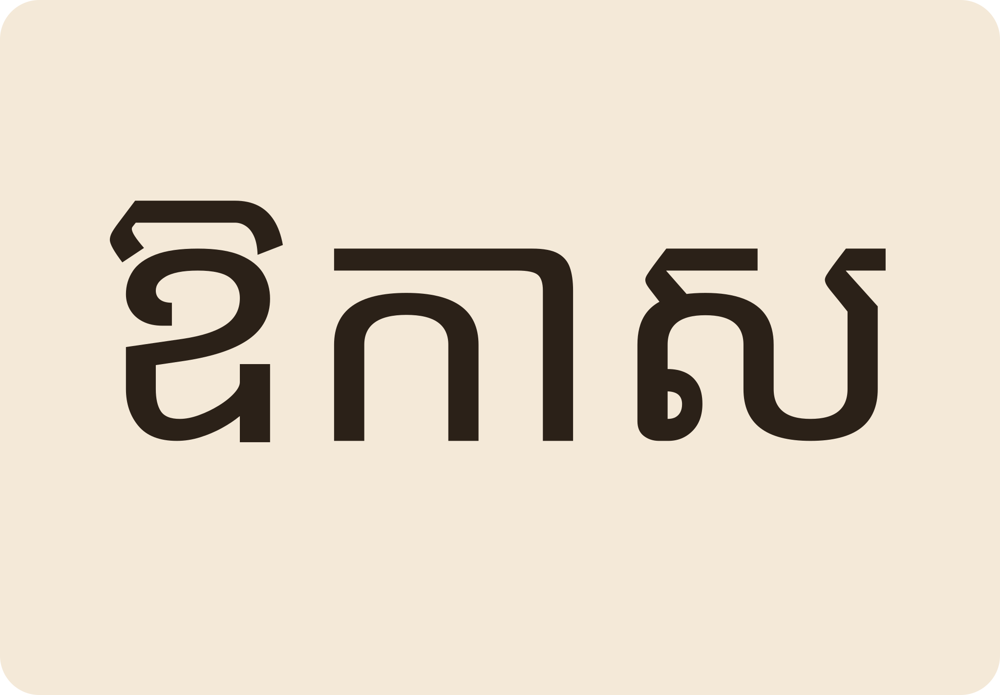
«ឱកាស» opportunity «ឱវាទ» advice។ អប់រំក្រៅប្រព័ន្ធផ្តល់ឱកាសដល់អ្នកគ្មានលទ្ធភាពរៀន។
ឱកាស “opportunity”, ឱវាទ “advice”. Non-formal education gives a chance to those who couldn't study.
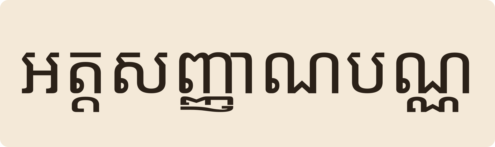
«ខ្ញុំមកធ្វើអត្តសញ្ញាណបណ្ណ ដែលមន្ត្រីឃុំបានផ្សព្វផ្សាយពីថ្ងៃមុន»។
“I've come to make the ID card the commune officials announced about.”
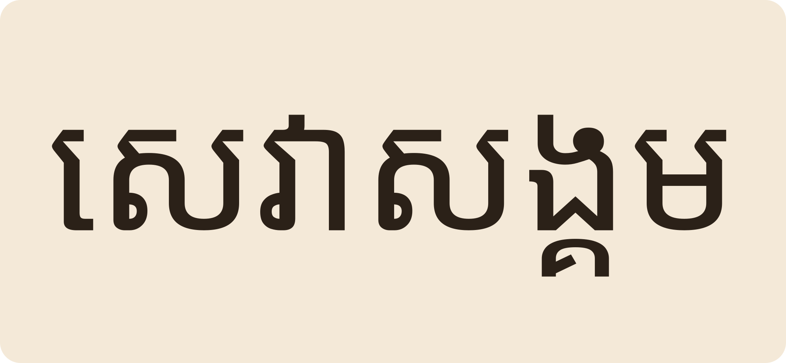
ក្រៅពីសាលាឃុំ មានមណ្ឌលសុខភាព សាលារៀន វត្តអារាម និងកាកបាទក្រហម។
Besides the commune hall: a health centre, schools, pagodas and the Red Cross.
នៅដើមពាក្យ «ឬស្សី» អាន rɨə។ «ឬ» ក៏ជាសញ្ញា «or» ដែរ អាន rʉə ខ្លី។
In ឬស្សី it reads “rɨ-”; as the word ឬ (“or”) it's a clipped “rʉh”.
បាទ «ឯ» មានសំឡេង «ឯ» ដូច «អេ» តែជាតួឈរខ្លួនឯង ដូចជា ឯកសារ។
It sounds like “ae” but is a full letter of its own: ឯកសារ.
ឧសភា May, ឧទ្យាន park, ឧបករណ៍ tool, ឧត្តម superior។
ឧសភា May, ឧទ្យាន park, ឧបករណ៍ tool, ឧត្តម superior.
ទៅរាយការណ៍ជូនមេឃុំ ឬអាជ្ញាធរស្រុកជាបន្ទាន់។
Report to the commune chief or district authorities right away.
កន្លែងព្យាបាល និងការពារសុខភាពនៅតំបន់។
A local health centre for treatment and prevention.
Tap a word's play button to hear it. Hide one side, then recall it before you tap to check.
ស្រៈពេញតួមាន ឥ ឦ ឧ ឩ ឪ ឫ ឬ ឭ ឮ ឯ ឰ ឱ។
The full vowel-letters: ឥ ឦ ឧ ឩ ឪ ឫ ឬ ឭ ឮ ឯ ឰ ឱ.
«ឪពុក» father។ កូនៗតែងតែរំលឹក និងតបស្នងសងគុណឪពុកម្តាយ។ «ឬស្សី» bamboo។ ទីពុកខ្ញុំគាស់គុម្ពឬស្សីដើម្បីយកដី។ «ឧសភា» May។ ទិវាពលកម្មអន្តរជាតិនៅថ្ងៃទី០១ ខែឧសភា។ «ឯកសារ» document។ សិស្សល្អចូលបណ្ណាល័យដើម្បីស្រាវជ្រាវឯកសារ។ «ឱកាស» opportunity «ឱវាទ» advice។ អប់រំក្រៅប្រព័ន្ធផ្តល់ឱកាសដល់អ្នកគ្មានលទ្ធភាពរៀន។
ឪពុក “father”. Children remember and repay their parents' kindness. ឬស្សី “bamboo”. My grandfather digs up a bamboo clump for soil. ឧសភា “May”. International Workers' Day is on 1 May. ឯកសារ “document”. Good students go to the library to research documents. ឱកាស “opportunity”, ឱវាទ “advice”. Non-formal education gives a chance to those who couldn't study.
«ខ្ញុំមកធ្វើអត្តសញ្ញាណបណ្ណ ដែលមន្ត្រីឃុំបានផ្សព្វផ្សាយពីថ្ងៃមុន»។ ក្រៅពីសាលាឃុំ មានមណ្ឌលសុខភាព សាលារៀន វត្តអារាម និងកាកបាទក្រហម។
“I've come to make the ID card the commune officials announced about.” Besides the commune hall: a health centre, schools, pagodas and the Red Cross.
Q. «ឬ» និង «រ» អានដូចគ្នាទេ?
Q. Are ឬ and រ read the same?
A. នៅដើមពាក្យ «ឬស្សី» អាន rɨə។ «ឬ» ក៏ជាសញ្ញា «or» ដែរ អាន rʉə ខ្លី។
A. In ឬស្សី it reads “rɨ-”; as the word ឬ (“or”) it's a clipped “rʉh”.
Q. «ឯ» ជា «អេ» ទេ?
Q. Is ឯ just an “e”?
A. បាទ «ឯ» មានសំឡេង «ឯ» ដូច «អេ» តែជាតួឈរខ្លួនឯង ដូចជា ឯកសារ។
A. It sounds like “ae” but is a full letter of its own: ឯកសារ.
Q. «ឧ» មានពាក្យអ្វីខ្លះ?
Q. What words start with ឧ?
A. ឧសភា May, ឧទ្យាន park, ឧបករណ៍ tool, ឧត្តម superior។
A. ឧសភា May, ឧទ្យាន park, ឧបករណ៍ tool, ឧត្តម superior.
Q. ពេលមានបញ្ហា តើទៅណា?
Q. Where do I go when there's a problem?
A. ទៅរាយការណ៍ជូនមេឃុំ ឬអាជ្ញាធរស្រុកជាបន្ទាន់។
A. Report to the commune chief or district authorities right away.
Q. «មណ្ឌលសុខភាព» ជាអ្វី?
Q. What is a មណ្ឌលសុខភាព?
A. កន្លែងព្យាបាល និងការពារសុខភាពនៅតំបន់។
A. A local health centre for treatment and prevention.
ខ្ញុំមិនមានឯកសារគ្រប់គ្រាន់ទេ។
I don't have enough documents.
តើត្រូវការឯកសារអ្វីខ្លះ?
Which documents are needed?
Say it in your head first, then tap the box to check.